01 / 08
Feu Vert, Orange ou Rouge
Votre score personnel (0–100 %), l’Officier du Jour Tong Shu et le conseil concret dès le réveil.
Comme vous regardez la météo avant de sortir, consultez QiMétéo chaque matin en 3 secondes. À partir de vos 4 Piliers BaZi (année, mois solaire, jour et heure de naissance), l’application croise les 12 Officiers Tong Shu et le Qi Men Dun Jia (hors heures Kong Wang) pour révéler la couleur de votre journée, vos créneaux d’or de 2h, la direction où orienter votre chaise et vos meilleures dates sur 30 jours.
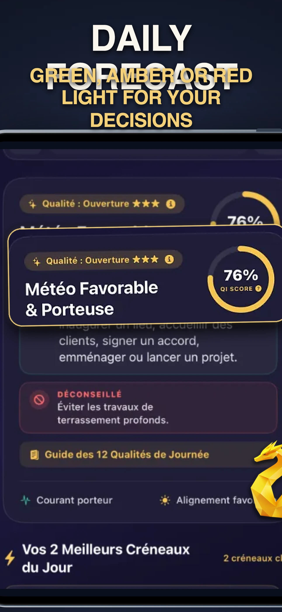
Du bulletin matinal en 3 secondes jusqu’au planificateur sur 30 jours, découvrez l’interface complète de QiMétéo. Basculez la langue (FR / EN) en haut à droite pour voir les captures dans chaque langue.
Votre score personnel (0–100 %), l’Officier du Jour Tong Shu et le conseil concret dès le réveil.
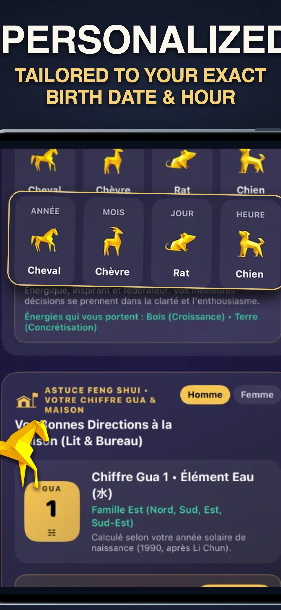
Vos 4 Piliers BaZi complets (Année, Mois solaire JieQi, Jour, Heure) et votre Chiffre Ming Gua.
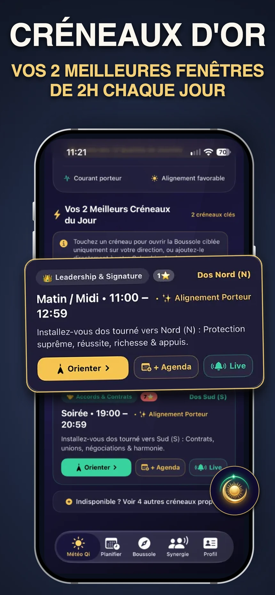
Vos 2 meilleures fenêtres gratuites chaque jour, et jusqu’à 6 créneaux positifs/jour en Premium.
Indique au degré près s’il faut tourner le dos à la Déité Qi Men ou faire face à la Combinaison.
Trouvez les meilleures dates sur 30 jours (tri par Score % ou Au plus tôt) et auditez votre Agenda Apple.
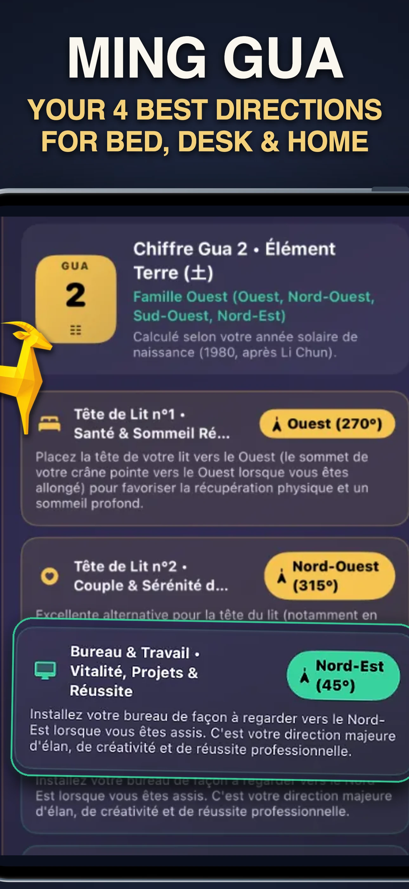
Vos 4 directions favorables permanentes (Sheng Qi, Tian Yi, Yan Nian, Fu Wei) et les 4 secteurs à éviter.
Comparez deux thèmes natals et trouvez les meilleures dates sur 30 jours où vos deux énergies sont au vert.
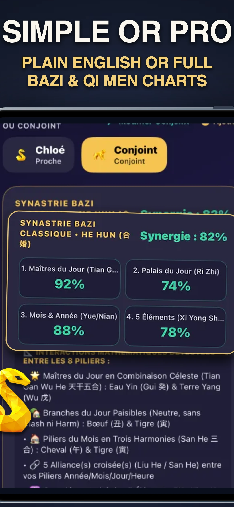
100 % en langage clair par défaut, ou affichage complet des grilles Qi Men, Portes, Étoiles, Déités et BaZi.
Dans la tradition du Tong Shu, chaque journée est gouvernée par l’un des 12 Officiers (Jian Chu). QiMétéo croise cet Officier avec vos 4 Piliers de naissance et applique les règles classiques : distinction stricte entre Réussite/Moisson et Accumulation, et évitement des heures Kong Wang.
Jours de Réussite (成), d’Ouverture (開), de Stabilité (定) ou de Commencement (建), sans opposition avec vos piliers natals. Idéal pour signer un contrat, lancer un projet, négocier, célébrer une union ou engager une démarche majeure.
Ne confondez pas Réussite (成) ou Moisson (收) avec Accumulation (滿) : un jour d’Accumulation amplifie tout — le positif comme le négatif ! N’y agissez que sur de très bons créneaux horaires Qi Men, et évitez toujours Accumulation et Moisson pour un acte médical.
Jours de Destruction (破), de Fermeture (閉) ou de Clash frontal avec votre Pilier du Jour : différez les engagements risqués. De même, évitez les heures Kong Wang (空亡) : à ce moment-là, aucun lien ne relie le Ciel et la Terre.
Se limiter à l’animal de l’année de naissance ignore 75 % de votre thème. QiMétéo calcule vos quatre piliers (BaZi) à partir de votre date et de votre heure de naissance pour mesurer les harmonies (San He, Liu He) et les oppositions (Chong) propres à votre profil.
Basé sur le Nouvel An solaire (LiChun, ~4 février), il fixe votre cercle social et votre Chiffre Ming Gua (1 à 9) pour vos 4 directions Feng Shui à la maison.
Calé sur les 24 périodes solaires astronomiques (JieQi), il gouverne votre climat professionnel et l’ancrage saisonnier de vos cinq éléments.
Votre identité profonde et votre sphère personnelle. Un Clash frontal entre le jour courant et votre Pilier du Jour abaisse immédiatement la note et active une alerte de prudence.
Gouverne vos projets, vos investissements et la concrétisation de vos actions. Il affine le score quotidien et la sélection de vos créneaux horaires.
Chaque écran de QiMétéo répond à une question concrète : quand signer ou lancer, à quelle heure passer un appel décisif, dans quel sens orienter votre fauteuil et comment aménager votre intérieur.
Entre 07h et 23h, QiMétéo écarte les heures Kong Wang (Vide Céleste où aucun lien ne relie le Ciel et la Terre) ainsi que les structures défavorables pour retenir vos 2 meilleurs créneaux gratuits du jour — et jusqu’à 6 créneaux positifs/jour en Premium (Combinaisons 5★, Accomplir des vœux, Succès Financiers & Relationnels, Déités).
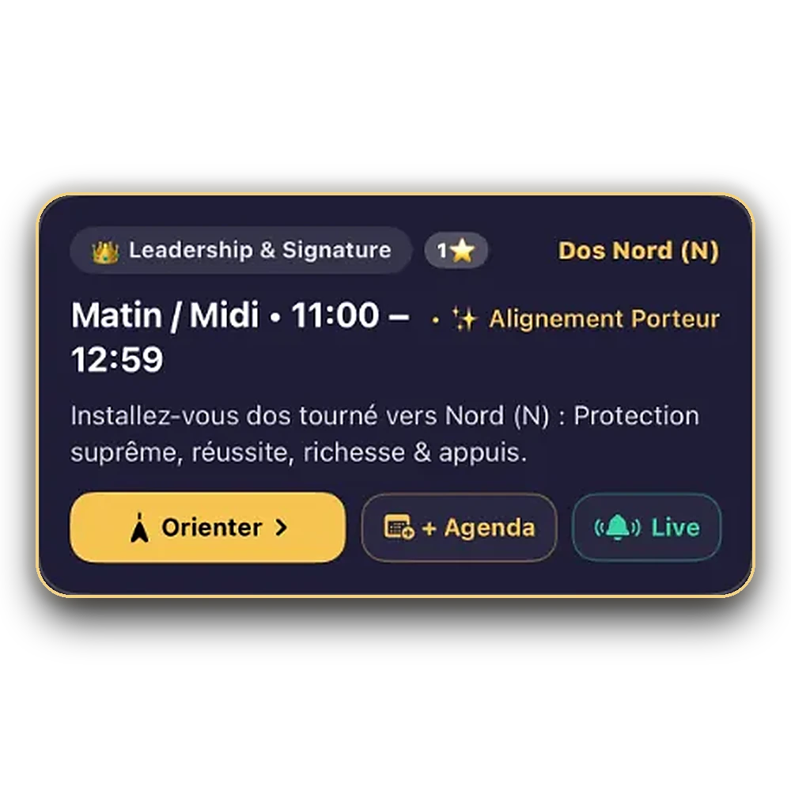
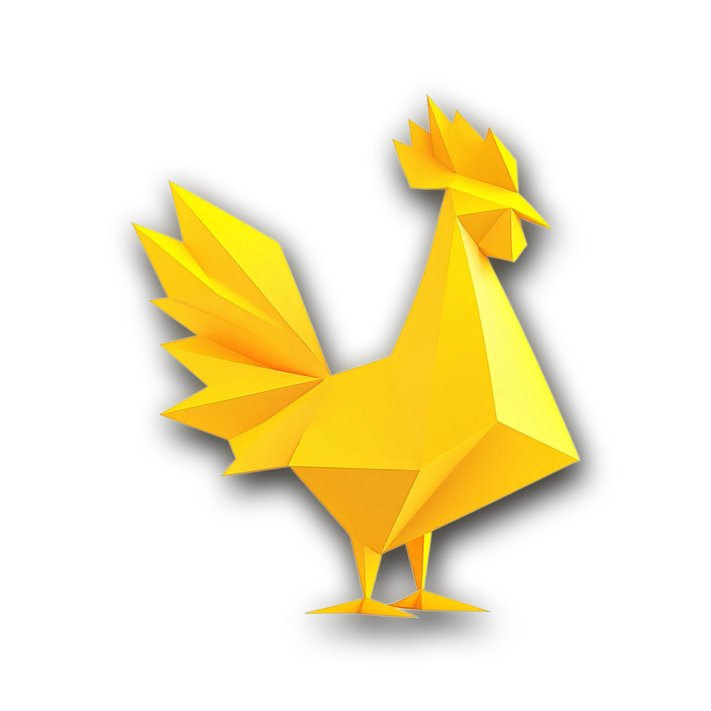
Selon la structure du créneau Qi Men, l’application indique s’il faut vous asseoir le dos tourné vers la Déité (Chief, Heaven, Earth, Moon, Harmony) ou faire face à une Combinaison, avec un retour haptique dès que vous êtes aligné.
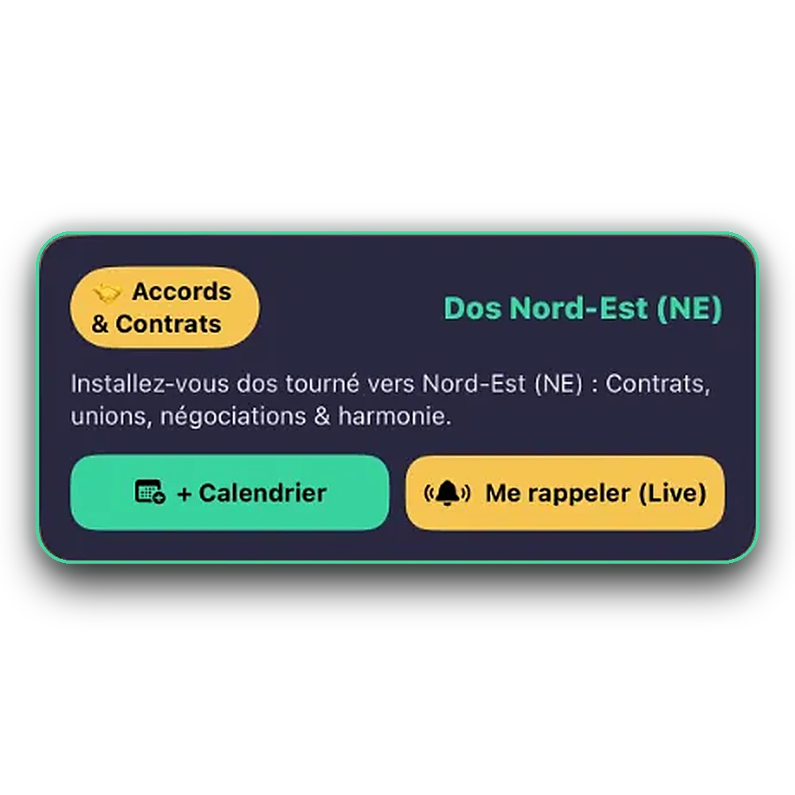
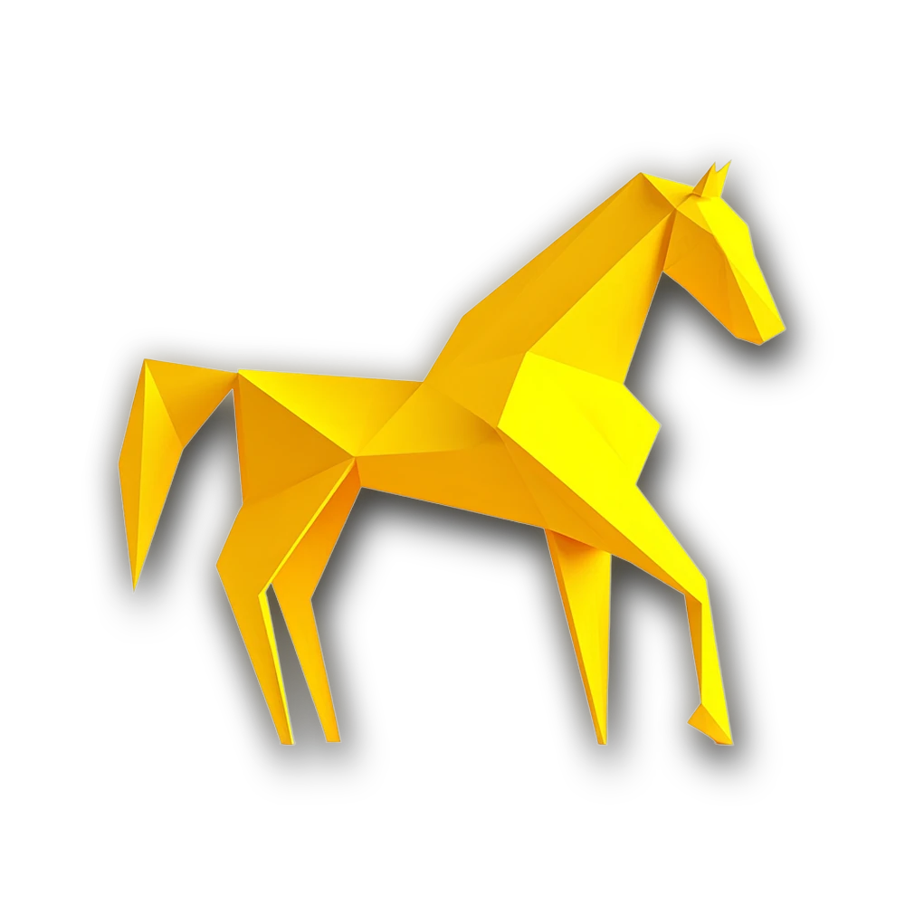
Choisissez votre objectif parmi 7 intentions (Signer & Encaisser, Lancer un projet, Union & Mariage, Immobilier & Travaux, Voyage, Santé & Chirurgie hors Accumulation/Moisson, Tri & Régime) et triez les meilleures dates sur 30 jours par « Plus pertinent (Score %) » ou « Au plus tôt (Pressé) ».
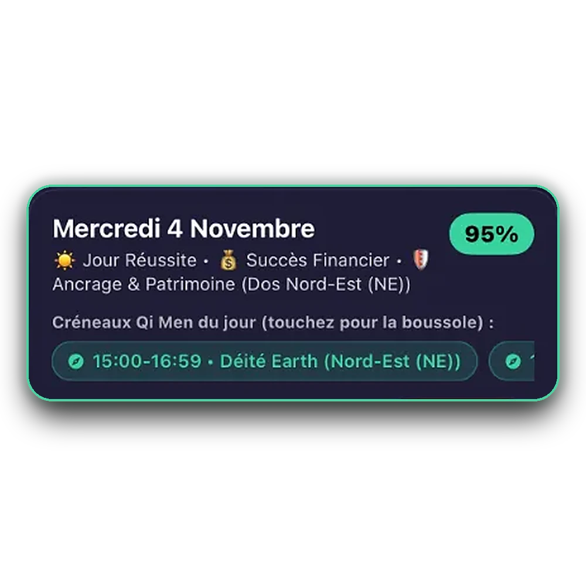
QiMétéo audite vos prochains rendez-vous iPhone sur 30 jours pour signaler tout événement tombant un jour de Destruction, de Clash ou en heure Kong Wang, et exporte vos créneaux d’or en 1 tap. Basculez à tout moment entre le Mode Simple sans jargon et le Mode Expert complet.
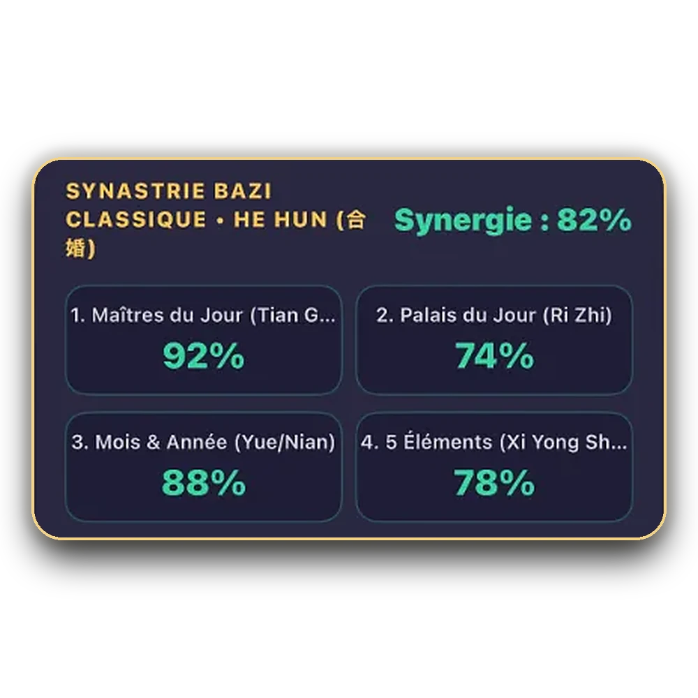
Au-delà de la météo du jour, QiMétéo calcule vos directions permanentes à la maison selon votre Chiffre Gua et croise deux thèmes complets (conjoint, associé, enfant, client) pour repérer les dates où vos deux énergies sont simultanément au vert.
Comparez vos piliers avec ceux d’un partenaire ou d’un proche pour mesurer vos affinités naturelles (San He, Liu He, éléments complémentaires) et filtrer les meilleures dates communes sur les 30 prochains jours.
Dormir la tête orientée vers votre direction Tian Yi soutient la récupération nocturne, tandis qu’orienter votre bureau vers Sheng Qi stimule la vitalité et la réussite de vos projets.
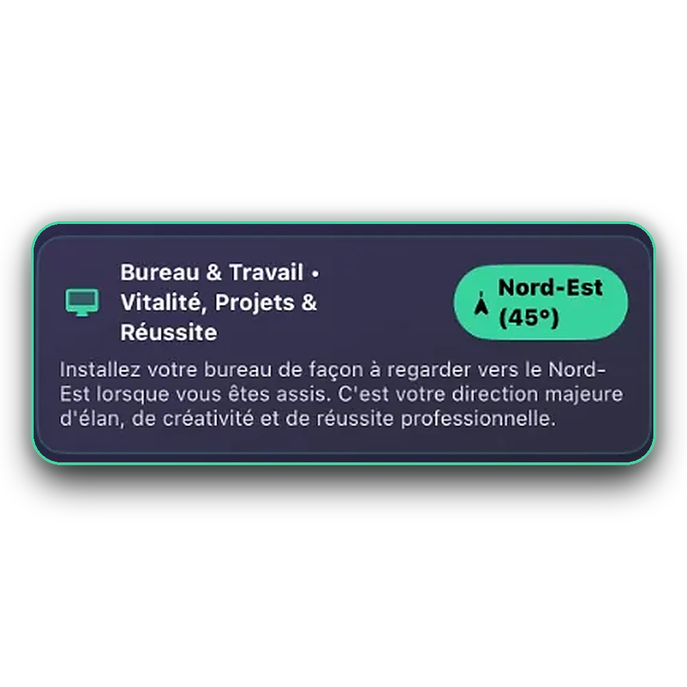
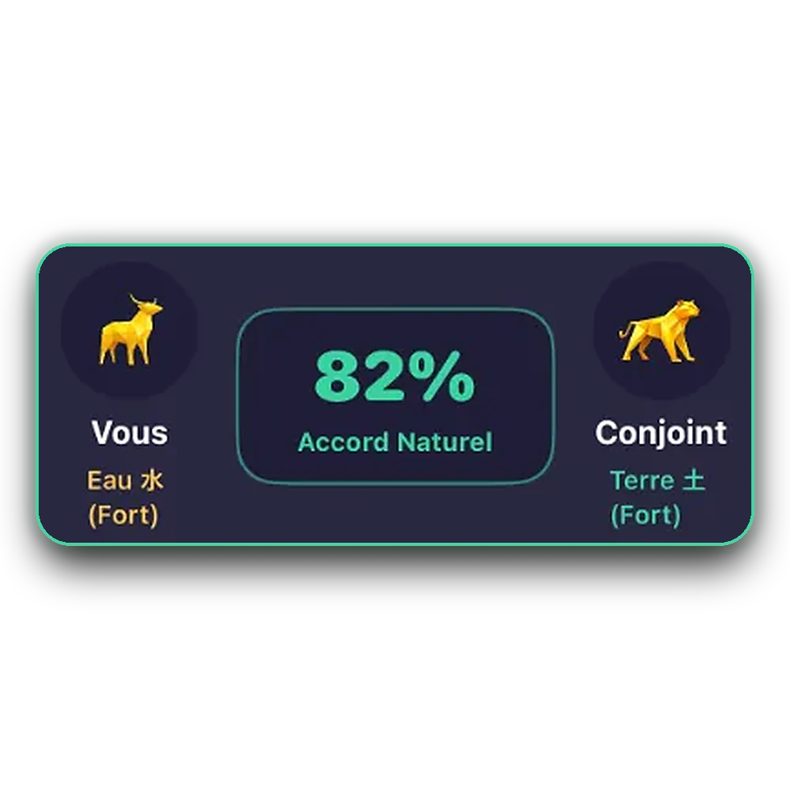
Le bulletin d’aujourd’hui, vos 2 meilleurs créneaux stratégiques de 2h et la boussole du jour sont gratuits sans limite de durée. QiMétéo Premium (Mensuel ou Annuel, tous deux avec 7 jours d’essai gratuit et Partage Familial Apple) débloque le planificateur sur 30 jours, tous les créneaux positifs du jour (jusqu’à 6/j), les 7 intentions de projet, le Feng Shui Ming Gua et le mode Duo.
Tout l’essentiel chaque matin pour consulter la météo d’aujourd’hui et ses 2 meilleurs créneaux horaires.
7 jours d’essai gratuit. Partage Familial Apple inclus pour jusqu’à 6 membres du foyer.
Idéal pour accompagner une signature, un lancement ou un déménagement sur 30 jours en toute liberté.
Votre date et votre heure de naissance, vos 4 Piliers BaZi, votre Chiffre Gua, les profils de vos proches et votre agenda demeurent sur votre iPhone ou votre iPad. Aucun compte requis, aucune collecte d’adresse IP ni serveur publicitaire.
En métaphysique chinoise (BaZi et Tong Shu), l’année de naissance ne représente qu’un seul pilier sur quatre. Votre jour de naissance détermine votre Maître du Jour (le pilier le plus sensible aux oppositions quotidiennes) et votre heure de naissance affine vos affinités énergétiques pour vos projets. Si vous ne connaissez pas votre heure de naissance, QiMétéo fonctionne également avec précision sur vos trois premiers piliers.
Dans la tradition authentique transmise par les praticiens du Tong Shu et du Qi Men Dun Jia, l’Officier « Accumulation » (滿) ne doit jamais être confondu avec « Réussite » (成) ou « Moisson » (收) : l’Accumulation démultiplie aussi bien le négatif que le positif (et doit être évitée pour tout acte médical). Quant aux heures « Kong Wang » (空亡, Vide Céleste), aucun lien n’unit alors le Ciel et la Terre : QiMétéo les détecte et les exclut automatiquement de vos créneaux recommandés.
Chaque jour, vous accédez gratuitement à la météo complète d’aujourd’hui (Feu Vert/Orange/Rouge, score %, Officier, pilier et affinités avec votre thème natal), à vos 2 meilleurs créneaux stratégiques de 2h, à la boussole en direct et aux widgets iOS. QiMétéo Premium (mensuel ou annuel, avec 7 jours d’essai gratuit) débloque le planificateur sur 30 jours, tous les créneaux positifs de la journée (jusqu’à 6/j), les 7 intentions de projet, l’audit du Calendrier Apple, le Feng Shui Ming Gua et la Synergie Duo.
Les deux outils agissent à des échelles complémentaires. La boussole Qi Men Dun Jia est temporelle : elle indique dans quelle direction orienter votre chaise pendant un créneau de deux heures pour un appel, une signature ou une négociation. Le Feng Shui Ming Gua est permanent : calculé selon votre naissance, il indique les quatre directions favorables de votre logement (tête de lit Tian Yi, bureau Sheng Qi, harmonie Yan Nian, stabilité Fu Wei).
Oui. Les deux formules QiMétéo Premium (mensuelle et annuelle) incluent nativement le Partage Familial Apple : jusqu’à six membres de votre groupe familial bénéficient de l’intégralité des fonctions Premium sur leur propre iPhone ou iPad sans supplément.
7 jours d’essai gratuit sur QiMétéo Premium · Partage Familial Apple inclus jusqu’à 6 proches.